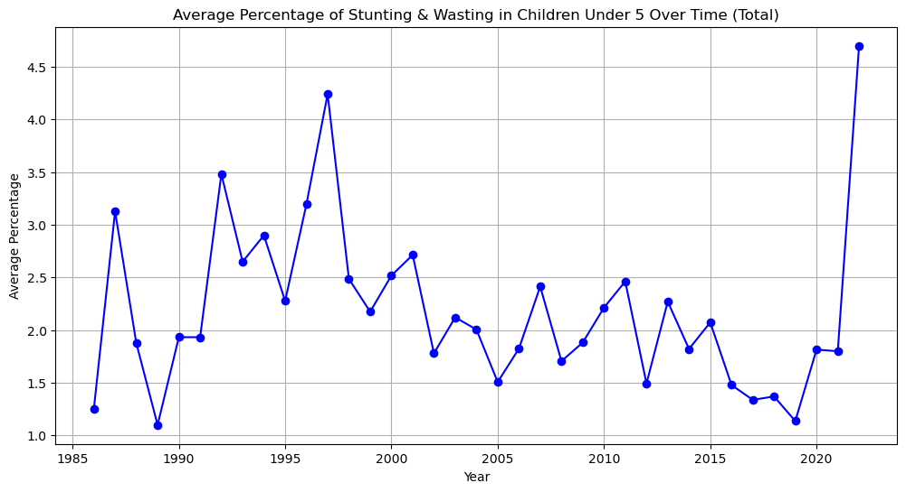
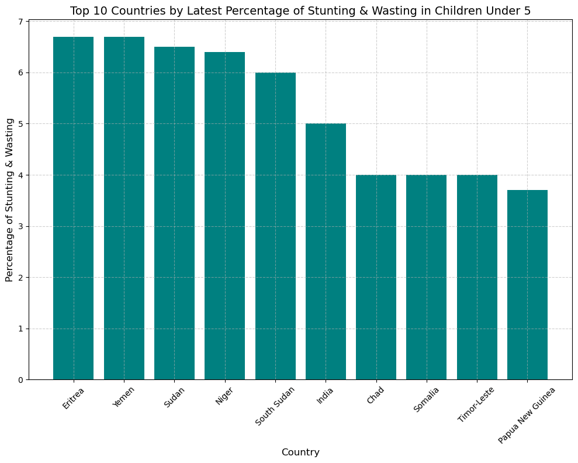

---
title: “A Global Look at Child Welfare Challenges”
author: “Saumya Mishra”
date: “2024-04-24”
format: html
---
Introduction
Children are the most vulnerable yet the most vital part of any society, and their health often serves as a reflection of the overall well-being of a community. This report uses UNICEF data to explore the global status of stunting and wasting in children under the age of five—two critical indicators of chronic and acute malnutrition that have profound effects on development and survival.
- WORLD MAP
 Global Patterns of Stunting and Wasting
Global Patterns of Stunting and Wasting
The first visualization, a world map, shows the prevalence of stunting and wasting among children under five. The darkest shades, indicating higher rates, are predominantly seen in parts of Africa and South Asia, signaling a dire need for intervention. The map is more than a representation of data; it is a stark illustration of a disparity that demands global attention and action.
- SCATTER PLOT WITH REGRESSION LINE

Trends Over Time
A scatter plot illustrates the trends in stunting and wasting from 1985 to around 2020, revealing a gradual decline over the years, as evidenced by the downward trajectory of the regression line. This positive trend suggests that interventions are making an impact, yet the significant scatter indicates that progress is not uniform across the globe.
- TIME SERIES

Time series
Recent Spike in Malnutrition
However, in contrast to the scatter plot, the second time-series graph presents a sharp increase in the average percentage of stunting and wasting in recent years. This unexpected spike could be indicative of recent economic or environmental crises, emphasizing that progress is not only uneven but also fragile.
- BAR CHART

Hotspots for Immediate Action
The bar chart presenting the top ten countries by the latest percentage of stunting and wasting pinpoints where the need for aid is most urgent. Countries like Eritrea, Yemen, and South Sudan top this list, revealing that conflict and instability are key drivers of child malnutrition.
Conclusions and Call to Action
While the decline in stunting and wasting in children under five over the past few decades is encouraging, the recent reversal of this trend is a cause for concern and warrants immediate action. Persistent hotspots of high malnutrition rates call for targeted interventions and support. International organizations, governments, and NGOs must collaborate to address the underlying causes, such as food insecurity, poor sanitation, and lack of healthcare. By investing in nutrition programs, promoting breastfeeding, and ensuring the availability of essential health services, we can change the course for the coming generations.